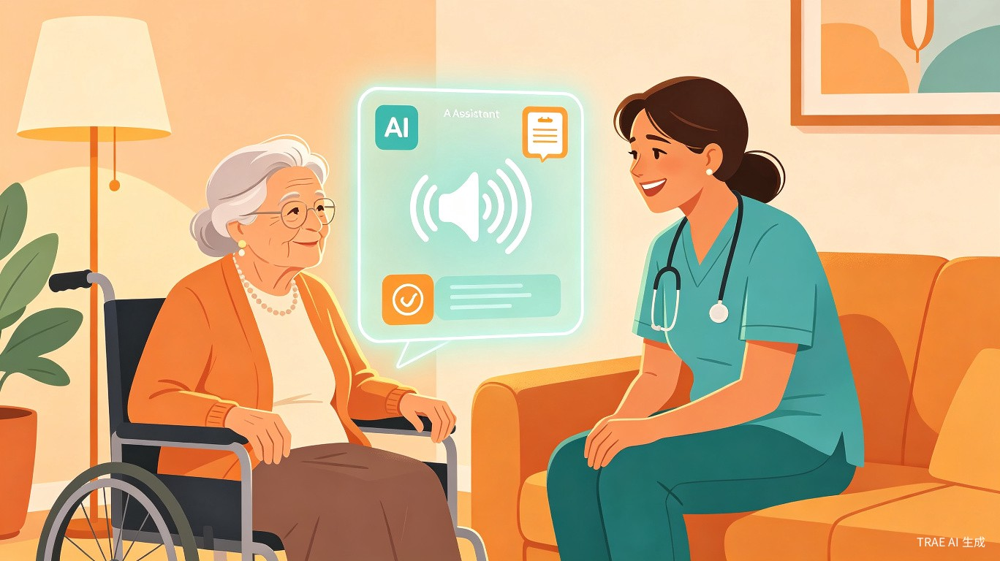
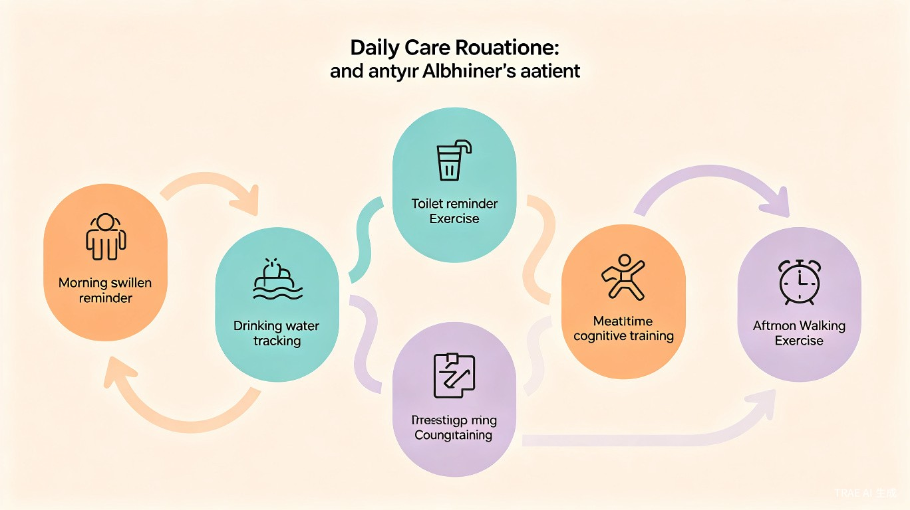
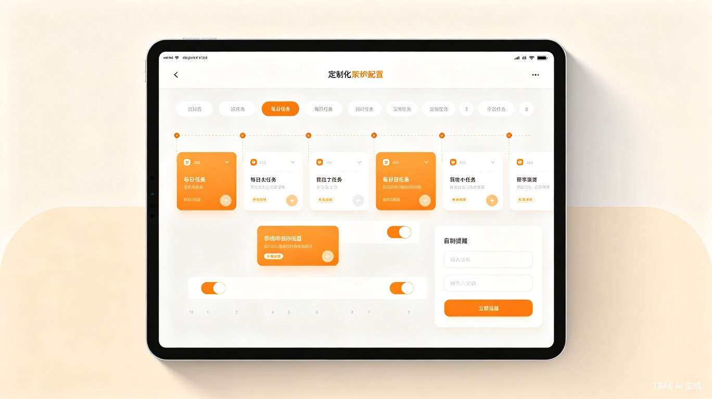

1 创意介绍
核心定位：AI辅助照护助手，不是替代人工看护，而是代替照护者发出重复指令，让照护者有更多精力关注老人的安全和情感需求。
想解决什么问题
阿尔茨海默病（老年痴呆）中重度患者的家庭照护者，每天需要重复发出大量相同的指令——提醒吞口水、引导上厕所、做认知训练、监督运动锻炼。每个老人的照护需求不同，如果AI助手能让照护者自定义配置这些重复流程，就能真正适配千万个不同的家庭。
灵感来源
我本人就是阿尔茨海默病患者家属的照护者。每天照顾父亲的亲身经历让我深刻体会到：照护工作中最大的痛苦不是体力劳动，而是无休止的重复指令——每天花半小时到一小时教父亲从1数到100、做简单算术题，还要时刻提醒他吞口水、观察他有没有语无伦次需要上厕所。
产品形态
一款基于语音交互的可自定义配置AI辅助照护助手（智能音箱 / 手机语音交互）。照护者仍需在身边看护，但AI代替照护者发出重复指令、完成标准化训练流程。最关键的是，所有流程均可由照护者自定义配置，适配不同老人的个性化需求。
2 为什么这件事很重要
绝大多数阿尔茨海默病患者依赖家庭照护，而每一位患者背后都有一位身心俱疲的照护者。照护者被大量重复劳动占据，没有精力关注老人的情感需求和突发安全状况。
3 目标用户及痛点
面向用户：中重度阿尔茨海默病患者的家庭照护者（子女、配偶等），且每个家庭的照护需求和习惯完全不同。
| 照护场景 | 当前痛点 | AI辅助方案 |
|---|---|---|
| 日常提醒 老人嘴尖流口水 |
照护者必须时刻盯着，反复提醒 | AI定时语音提醒"吞一下口水" |
| 如厕引导 喝水后需要上厕所 |
手动计时，反复引导踏步、出声 | 记录饮水量，自动计算时间，语音引导踏步+出声 |
| 异常干预 老人语无伦次 |
照护者没注意到可能导致尿失禁 | AI识别异常信号，自动触发干预流程 |
| 认知训练 饭前数数、算术 |
一对一反复教学，每天耗时30-60分钟 | AI语音互动训练，自动判断对错，答错纠正 |
| 运动管理 学步器运动半小时 |
手动计时，老人反复问进度 | 走动自动计时，停下暂停，实时语音播报 |
4 五大核心功能
自定义日常提醒
配置定时提醒内容、频率、触发条件。如：定时提醒吞口水、喝水后N小时提醒上厕所、吃药提醒等。
自定义如厕引导
配置如厕前准备步骤：先踏步30下 → 说出"尿急" → 再去厕所。每步指令内容、次数均可自定义。
自定义异常干预
检测到语无伦次等异常信号时，自动触发预设干预流程：语音提醒 + 踏步引导 + 尿急出声引导。
自定义认知训练
配置训练内容：数数范围、算术题目、跟读次数、通过标准。AI自动判断对错，答错温柔纠正。
自定义运动管理
配置运动时间、目标时长、计时规则（走动计时/停下暂停）、进度播报频率。老人问进度时自动播报。
5 典型照护流程示例

吞口水提醒（全天循环）
AI定时语音提醒老人"吞一下口水"，照护者无需反复口头提醒。
饮水记录 + 如厕提醒
记录每次饮水量（如350ml），3.5小时后AI自动语音提醒上厕所，并引导踏步30下、说出"尿急"。
异常状态智能识别
检测到老人语无伦次时，AI自动触发干预流程，防止尿失禁意外，同时提醒照护者注意。
饭前认知训练
AI语音引导数数（1到100）和算术训练（5+6、5+8），自动判断对错，答错让老人跟读正确答案3次。
下午运动管理
3:30提醒使用学步器，走动自动计时、停下暂停，老人问"够时间了没"时AI实时播报进度。
6 可自定义配置 — 适配每个家庭
每个老人的照护需求完全不同，自定义配置是这个产品的核心竞争力。照护者只需花10分钟设置好流程，AI就能每天自动执行。

可视化流程配置
通过简单的表单或拖拽，配置每天的提醒、训练、运动流程。
自定义指令内容
可以录入照护者自己的声音，或使用AI语音，指令内容完全自定义。
自定义触发条件
支持定时触发、事件触发（如喝水后N小时）、状态触发（如检测到语无伦次）。
自定义判断标准
训练通过标准、运动达标条件、提醒频率等均可根据老人实际情况灵活设置。
7 价值与意义
效率提升
照护者每天在重复提醒和训练上花费的时间可从3-4小时降低到30分钟以内。一次配置，长期复用——AI 24小时待命，即使在照护者疲惫或短暂分心时也能持续发出指令。
社会价值
中国阿尔茨海默病患者超过1500万，每个家庭都有独特的照护需求。本产品提供一个可自定义的AI辅助平台，让每个家庭都能配置最适合的照护流程，是千万家庭照护者的"个性化减负助手"。
核心理念：AI帮你发指令，你负责看护安全。让照护者从重复劳动中解放出来，把宝贵的精力留给真正需要人工关怀的地方——老人的安全、尊严和情感陪伴。